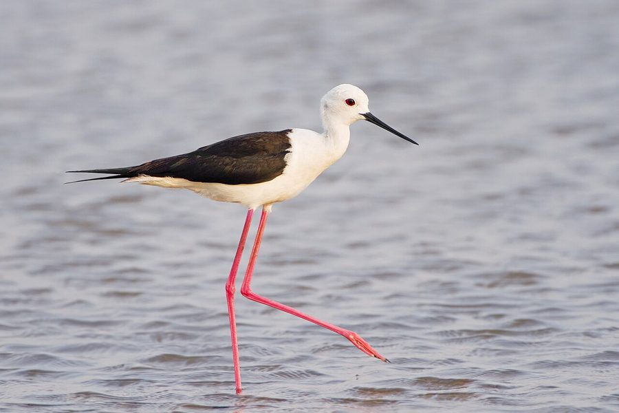

आवाकBlack-winged Stilt
Himantopus himantopus · Recurvirostridae · BRD-0059

- Scientific name
- Himantopus himantopus (Linnaeus, 1758)
- Family
- Recurvirostridae
- Hindi
- आवाक
- Status here
- native
- IUCN
- LC
When to look कब देखें
Present all year.
आवाक / Black-winged Stilt
Himantopus himantopus (Linnaeus, 1758) — Recurvirostridae
आवाक (ब्लैक-विंग्ड स्टिल्ट / लाल-टांगिया) — पूर्वी उत्तर प्रदेश के उथले जलाशयों, दलदली मैदानों और धान के खेतों में पाया जाने वाला एक छोटा, आकर्षक और अत्यंत विशिष्ट जलपक्षी है। इसकी सबसे बड़ी पहचान इसकी अत्यधिक लंबी, पतली और चमकीली गुलाबी-लाल टांगे (extraordinarily long pink legs) हैं, जो शरीर के अनुपात में राजहंस (flamingo) को छोड़कर किसी भी अन्य पक्षी से सबसे लंबी होती हैं। इसका शरीर सफ़ेद और पंख चमकीले काले (black-and-white plumage) होते हैं, तथा इसकी चोंच लंबी, सीधी और सुई जैसी काली (thin black bill) होती है। यह उथले पानी में चहलकदमी करते हुए पानी की सतह से जलीय कीड़ों, घोंघों और कीड़ों के लार्वा को चुन-चुन कर खाता है। प्रजनन काल के दौरान, ये कीचड़दार किनारों पर समूहों में घोंसले (breeds in colonies) बनाते हैं, और किसी खतरे या घुसपैठिए के आने पर बहुत तेज़ तीखी आवाज़ें निकालकर पूरे इलाके को सिर पर उठा लेते हैं।
Quick Identification त्वरित पहचान
| Feature | Description |
|---|---|
| Size | Slender wading bird (35–40 cm total length); stands high on extremely long legs |
| Legs | Diagnostic extraordinarily long, thin, bright pinkish-red legs |
| Plumage | Pure white head, neck, and underparts; glossy black wings and back |
| Bill | Long, very thin, straight, needle-like black bill |
| Flight | Trailing long pink legs extend far beyond the tail in flight; wings are long and pointed |
| Nest | Builds nests in loose colonies on exposed mudbanks or shallow islands |
Field tip: Look along shallow pond margins or flooded roadside ditches. Watch for a thin, black-and-white bird walking slowly on bright pink legs, pecking at the water surface. When breeding, they fly overhead screaming high-pitched calls if you get too close. The female has a brownish back (compared to the glossy black of the male) and is shown in the field tip.
Morphology आकारिकी
Biometrics (typical measurements in the northern Indian plains):
| Measurement | Range |
|---|---|
| Total length | 350–400 mm |
| Wing (flattened chord) | 220–250 mm |
| Tail | 75–85 mm |
| Tarsus | 110–135 mm |
| Bill (culmen from base) | 60–70 mm |
| Weight | 150–200 g |
Plumage: Adults have a pure white head and neck (often with some grey patches on the crown and nape, especially in winter and in females). The breast, belly, and underparts are clean white. The mantle, back, and wings are glossy black with a greenish gloss (dull brown-black in females). The tail is pale grey. The underwings are completely black.
Bare parts: The needle-like bill is black. The irises are bright carmine-red. The legs and tarsi are extraordinarily long, thin, and bright pink or rose-red. The toes have small webs at the base.
Vocalisations
Black-winged Stilts are highly vocal, especially when nesting in colonies.
- Colony / Alarm call: A loud, sharp, metallic yelping scream, kek-kek-kek or kip-kip-kip, repeated rapidly when nesting sites are approached.
- Contact call: A softer, squeaky kyip, produced while foraging in groups.
Behaviour & Ecology व्यवहार और पारिस्थितिकी
- Wading foraging: Wades in shallow margins, often up to its belly, searching for prey. Its extremely long legs allow it to forage in deeper water than plovers or sandpipers. It picks prey from the surface or sweeps its bill through the water to catch moving insects.
- Colonial breeding: Breeds in loose colonies on open mudflats and shallow islands. The group cooperates to defend the colony, flying up together to mob crows, dogs, and birds of prey.
- Prey choices: Feeds heavily on small aquatic invertebrates, particularly insects and snails.
Life Cycle / Phenology जीवन चक्र
- Breeding season: April to August in northern India, coinciding with the pre-monsoon drying of wetlands and the early monsoon rise.
- Nesting: Builds a simple nest scrape on dry mud, lined with grass stalks, mud pellets, and shells.
- Nest site: Located on open mudbanks, drying canal beds, or shallow islands near water.
- Clutch size: 3 to 4 olive-green eggs, heavily spotted with dark brown.
- Incubation: 22–25 days, shared by both parents.
- Fledging: Chicks are covered in buff-and-black down and leave the nest to forage within hours of hatching (precocial). They fly in about 28–32 days.
Host Plants or Prey आहार
Primary food items:
- Insects: Water boatmen, backswimmers, midge larvae, mosquito larvae, and beetles.
- Mollusks: Small freshwater snails, including the Ramshorn Snail (Indoplanorbis exustus).
- Other invertebrates: Aquatic worms, small freshwater crabs, and shrimp.
- Vertebrates: Occasional small tadpoles and tiny fish fry.
Predators / Natural Enemies शत्रु
- Raptors: Harriers and small eagles prey on fledglings and nesting adults.
- Corvids: House Crows (Corvus splendens) are major nest predators, seeking out eggs in open mudflat colonies.
- Mammals: Jackals, mongoose, and feral dogs raid nesting colonies, consuming eggs and chicks.
Agricultural / Human Relevance कृषि प्रासंगिकता
Natural insect controller. By consuming insect larvae (including mosquito and midge larvae) in irrigated paddy fields, Black-winged Stilts help control pest populations.
Conservation and legal status: Protected under Schedule IV of the Wildlife Protection Act, 1972. They are sensitive to habitat loss from marsh drainage, water pollution from industrial run-off, and nesting failures caused by sudden water rises (flooding of nests) or predation by dogs.
Expected Locally स्थानीय रूप से अपेक्षित
Not a field record. Written from published accounts for eastern Uttar Pradesh. No confirmed local sighting yet — if you have seen it, that is what the atlas needs.
अभी तक स्थानीय पुष्टि नहीं। यह विवरण प्रकाशित स्रोतों से है, किसी अवलोकन से नहीं।
A common resident throughout the Basti district. They are frequently spotted in flooded rice paddies, shallow lakes (taal), and sewage marshes on the outskirts of Basti town. Large nesting colonies are regularly observed on the temporary sandbanks and mudflats of the Ghaghra river during the dry summer months.
Distribution वितरण
Global range: Widespread across Europe, Africa, South Asia, East Asia, and South America.
In India: Found throughout the plains and low hills country-wide.
In Uttar Pradesh: Common resident along all river basins, wetlands, and canal systems state-wide.
In Basti district / eastern UP: Regularly recorded year-round near shallow marshes in all blocks.
Research Questions शोध प्रश्न
Anyone can investigate these | कोई भी इन प्रश्नों की जाँच कर सकता है
- How many steps per minute does a foraging Black-winged Stilt take in shallow water? — Count and compare walking speeds in mud versus water.
- What is the hatching success rate of Black-winged Stilt nests in colonies threatened by feral dogs? — Monitor nest survival in local mudflats.
- Do Stilts prefer feeding in sewage-fed marshes over clean river margins in Basti? / क्या आवाक बस्ती में साफ नदी के किनारों की तुलना में गंदे पानी वाले दलदली इलाकों में चरना अधिक पसंद करता है? — Compare population densities.
- How do breeding Stilts react when a House Crow approaches within ten meters of their nest? — Document nesting defense behaviors.
- What is the proportion of Ramshorn Snails in the diet of Stilts in Basti's paddy fields? / बस्ती के धान के खेतों में आवाक के आहार में चपटे घोंघे (Ramshorn Snail) का अनुपात क्या है? — Observe feeding attempts and prey catches.
Similar Species मिलती-जुलती प्रजातियाँ
| Species | Key Difference | हिंदी |
|---|---|---|
| Little Ringed Plover (Charadrius dubius) | Much smaller (15–18 cm); short yellowish legs; double black-and-white breast band; short bill | छोटा बटेर — बहुत छोटा आकार, पीली टांगे, छाती पर काली पट्टी |
| Common Sandpiper (Actitis hypoleucos) | Smaller; olive-brown upperparts; short legs; constantly bobs tail; lacks white and black pattern | छोटा बटान — छोटा आकार, मटमैला भूरा रंग, पूँछ हिलाना |
| Pied Avocet (Recurvirostra avosetta) | Upcurved thin black bill; blue-grey legs; distinct black-and-white wing stripes; winter migrant | काली-सफ़ेद अवाक — ऊपर की ओर मुड़ी हुई चोंच, नीली टांगे |
Field rule: Slender black-and-white bird with extraordinarily long, bright pink legs and a thin, needle-like black bill wading in shallow water is a Black-winged Stilt.
Taxonomy & Classification वर्गीकरण
Original description. Carl Linnaeus described the Black-winged Stilt as Charadrius himantopus in 1758 in his Systema Naturae (ed. 10, vol. 1, p. 151). The type locality was southern Europe. The genus Himantopus was introduced by Brisson in 1760. The genus and specific names are derived from the Greek himantopus, meaning strap-footed or thong-legged, referencing its long, thin legs.
Subspecies. Five subspecies are recognized globally. The nominate subspecies resident in UP and South/East Asia is:
| Subspecies | Authority | Range | Notes |
|---|---|---|---|
| H. h. himantopus | (Linnaeus, 1758) | Europe, Africa, and southern Asia | UP subspecies; nominate form; widely distributed across the Old World |
Family and order placement. Placed in the order Charadriiformes, family Recurvirostridae (stilts and avocets).
Phylogenetic notes. The genus Himantopus forms a closely related group of species, with some taxonomists treating regional forms (like the Black-necked Stilt of the Americas) as separate species.
IUCN status rationale. Listed as Least Concern (LC) due to its massive global range and stable population, showing high tolerance to artificial wetlands (sewage ponds, salt pans).
Photo Gallery फोटो गैलरी
References संदर्भ
- Linnaeus, C. (1758). Systema Naturae. Tenth Edition. Holmiae, p. 151. [original description]
- Ali, S. & Ripley, S. D. (1999). Handbook of the Birds of India and Pakistan. Vol. 2. Oxford University Press, New Delhi.
- Grimmett, R., Inskipp, C. & Inskipp, T. (2011). Birds of the Indian Subcontinent. 2nd ed. Christopher Helm, London.
- Hayman, P., Marchant, J. & Prater, T. (1986). Shorebirds: An Identification Guide to the Waders of the World. Christopher Helm, London.
- BirdLife International (2024). Himantopus himantopus. IUCN Red List of Threatened Species. Ver. 2024.
- GBIF Occurrence Data — Himantopus himantopus, Uttar Pradesh (2010–2025).
Source file: species/fauna/birds/black_winged_stilt.md